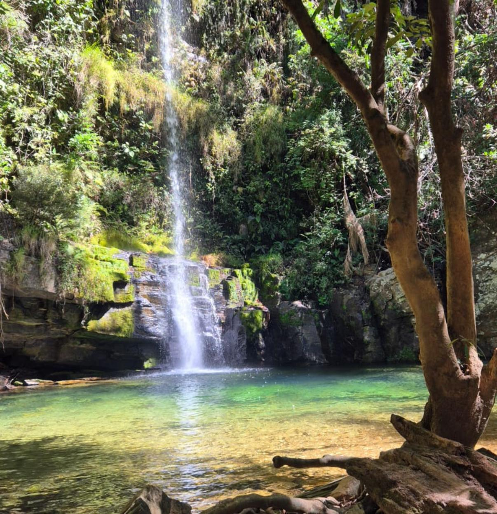

Caminho do Céu
Trilha que leva a um dos mirantes mais deslumbrantes da região, com vista sobre os campos e as serras da Canastra.

Roteiros de ecoturismo responsável, trilhas, cachoeiras e mirantes saindo de Vargem Bonita, com vivências autênticas na natureza mineira.
Falar pelo WhatsApp →
Guia credenciado pelo Parque Nacional da Serra da Canastra (Cadastur nº 39259562000190 / SEI 10966906), o Alef atua há anos oferecendo experiências completas e seguras pela região.
Baseado em Vargem Bonita (MG) — porta de entrada da Canastra — ele conduz roteiros que exploram as principais cachoeiras, trilhas e mirantes, sempre com foco em ecoturismo responsável.
Participa também do projeto “Passaporte do Queijo”, conectando o visitante à cultura e à gastronomia local.
Sem preços aqui — selecione a data e fale direto com o Alef pelo WhatsApp.
Trilha que leva a um dos mirantes mais deslumbrantes da região, com vista sobre os campos e as serras da Canastra.

Passeio pelo icônico Cachoeira do Fundão, com trilhas entre formações rochosas e piscinas naturais de água cristalina.

Subida à parte alta do Casca Danta, com panorâmicas incríveis e o ponto mais alto da Serra da Canastra.

Um vale de beleza singular, entre cachoeiras e formações que fazem da região um convite ao ecoturismo.
Credenciado pelo Parque Nacional da Serra da Canastra e Cadastur, com foco em segurança e responsabilidade ambiental.
Passeios de um dia, roteiros de 4 a 7 dias e experiências montadas conforme o perfil de cada visitante.
Participa do projeto “Passaporte do Queijo”, conectando você à gastronomia e à tradição de Minas Gerais.
Entre em contato, monte o roteiro e aproveite a Canastra.
Conte quais lugares você quer conhecer e quantas pessoas vão viajar.
O Alef define as datas, trilhas e cachoeiras que fazem sentido para o seu grupo.
Basta seguir o guia e curtir as trilhas, cachoeiras e mirantes da região.
“Uma experiência inesquecível que realmente dá de volta. Viajei de forma bonita e responsável com o Alef.”
“O equilíbrio perfeito entre aventura, conforto e impacto positivo. Altamente recomendado!”
“Mais do que uma férias — um movimento. Não vejo a hora de viajar com o Alef de novo.”
Entre em contato pelo WhatsApp e reserve seu roteiro de ecoturismo com o Guia Alef.
Falar pelo WhatsApp →